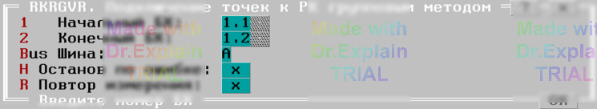

3.6 RKRGVR. Подключение точек к РК групповым методом
Тест проверяет отсутствие замыканий при подключение групп точек к указанной шине коммутатора.
Утилита предоставляет меню, показанном на рисунке:

Опция "1-ый БК" задает адрес начального БК диапазона проверяемых БК.
Опция "2-ой БК" задает адрес конечного БК диапазона проверяемых БК. При проверке единственного БК адрес конечного БК должен быть равен адресу начального БК.
Опция "Шины" имеет две установки: "A" и "B", определяющие шину для подключения групп точек.
Алгоритм проверки
Проверки выполняется поблочно. Для каждого проверяемого
БК выполняется цикл групповых разбиений.
Для каждого группового разбиения выполняются действия:
- Точки, входящие в очередное разбиение, подключаются к заданной шине. Прочие точки подключаются к альтернативной шине.
- Проверяется отсутствие связи. При наличии связи выдается сообщение вида: ?TST2 14 БК1.2 к РГВ=3Fh 0111111: замыкание
- После проверки всех разбиений предоставляется меню, см. п. 6.3.